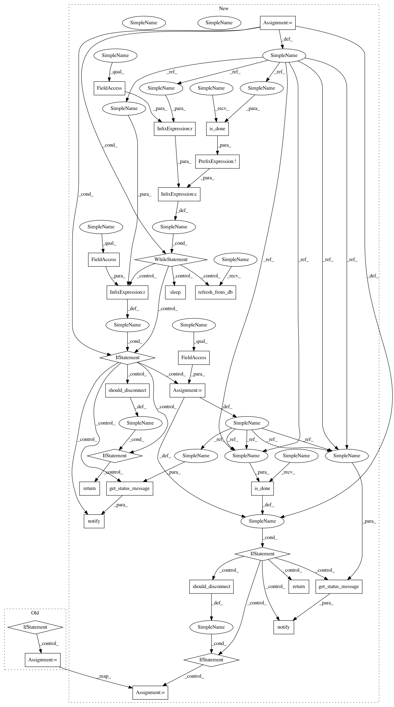

cb08eced70972b74bbedc9346f6b789e66c14ac7,polyaxon/streams/api.py,,experiment_logs,#Any#Any#Any#Any#Any#,335
Before Change
consumer.remove_sockets({ws, })
should_quite = True
if not consumer.ws:
_logger.info("Stopping logs monitor for experiment uuid %s", experiment_uuid)
RedisToStream.remove_experiment_logs(experiment_uuid=experiment_uuid)
// if experiment_uuid in request.app.experiment_logs_consumers:
// consumer = request.app.experiment_logs_consumers.pop(experiment_uuid, None)
// if consumer:
// consumer.stop()
should_quite = True
if should_quite:
return
await asyncio.sleep(SOCKET_SLEEP)
After Change
num_message_retries = 0
// Stream phase changes
status = None
while status != ExperimentLifeCycle.RUNNING and not ExperimentLifeCycle.is_done(status):
experiment.refresh_from_db()
if status != experiment.last_status:
status = experiment.last_status
await notify(consumer=consumer, message=get_status_message(status))
if should_disconnect():
return
await asyncio.sleep(SOCKET_SLEEP)
if ExperimentLifeCycle.is_done(status):
await notify(consumer=consumer, message=get_status_message(status))
RedisToStream.remove_experiment_logs(experiment_uuid=experiment_uuid)
return
await notify(consumer=consumer, message=get_status_message(status))
while True:
num_message_retries += 1
for message in consumer.get_messages():
num_message_retries = 0
await notify(consumer=consumer, message=message)
// After trying a couple of time, we must check the status of the experiment
if num_message_retries > MAX_RETRIES:
experiment.refresh_from_db()
if experiment.is_done:
_logger.info(
"removing all socket because the experiment `%s` is done", experiment_uuid)
consumer.ws = set([])
else:
num_message_retries -= CHECK_DELAY
// Just to check if connection closed
if ws._connection_lost: // pylint:disable=protected-access
_logger.info("Quitting logs socket for experiment uuid %s", experiment_uuid)
consumer.remove_sockets({ws, })
should_quite = True
if should_disconnect():
should_quite = True
if should_quite:
return
await asyncio.sleep(SOCKET_SLEEP)
In pattern: SUPERPATTERN
Frequency: 3
Non-data size: 29
Instances
Project Name: polyaxon/polyaxon
Commit Name: cb08eced70972b74bbedc9346f6b789e66c14ac7
Time: 2018-08-23
Author: mouradmourafiq@gmail.com
File Name: polyaxon/streams/api.py
Class Name:
Method Name: experiment_logs
Project Name: polyaxon/polyaxon
Commit Name: cb08eced70972b74bbedc9346f6b789e66c14ac7
Time: 2018-08-23
Author: mouradmourafiq@gmail.com
File Name: polyaxon/streams/api.py
Class Name:
Method Name: experiment_logs
Project Name: polyaxon/polyaxon
Commit Name: 7b5b228f15dabcfcd81d601596652d526e9549dd
Time: 2018-08-23
Author: mouradmourafiq@gmail.com
File Name: polyaxon/streams/api.py
Class Name:
Method Name: build_logs
Project Name: polyaxon/polyaxon
Commit Name: 7b5b228f15dabcfcd81d601596652d526e9549dd
Time: 2018-08-23
Author: mouradmourafiq@gmail.com
File Name: polyaxon/streams/api.py
Class Name:
Method Name: job_logs